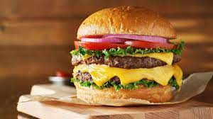

Other Recipes!
Cheeseburger

Description
A cheeseburger is a hamburger topped with cheese. Traditionally, the slice of cheese
is placed on top of the meat patty. ...As with other hamburgers, a cheeseburger may
include toppings such as lettuce, tomato, onion, pickles, bacon, mayonnaise, ketchup,
and mustard.
Ingredients
- 2 pounds freshly ground chuck, (at least 80% lean, a.k.a. 80/20)
- 1 tablespoon onion powder
- 1 teaspoon salt
- 1 teaspoon freshly ground black pepper
- 12 slices deli-counter American cheese
- 6 large burger buns, preferably homemade, toasted if desired
To garnish
- ketchup
- mayonnaise
- thousand island dressing
- sliced red onion
- sliced tomatoes
- sliced pickles
- fresh lettuce leaves
Directions
-
In a large bowl, mix ground beef, onion powder, salt and pepper until just combined.
Do no overmix, or your patties will be tough.
-
Divide into six portions and form patties, without pressing too hard. They should be
uniform in thickness. Smooth out any cracks using your fingers. make these right
before you grill them, so they stay at room temperature.
-
Preheat your grill, grill pan or cast-iron skillet to high heat and add burger patties.
If using a grill, cover the lid.
-
Cook until the crust that forms on the bottom of the burger releases it from the pan or
grate -- about 2 minutes. Gently test, but don't flip it until it gets to this point.
When burgers lift up easily, flip, add two slices of cheese to each, close lid if using
a grill, and cook on the other side for another 2-3 minutes for medium to medium rare.
-
Remove burgers with a sturdy metal spatula and transfer to a plate. Allow to rest for
several minutes, then transfer to buns.
-
Garnish as desired and serve immediately.
Try out one of our other recipes!